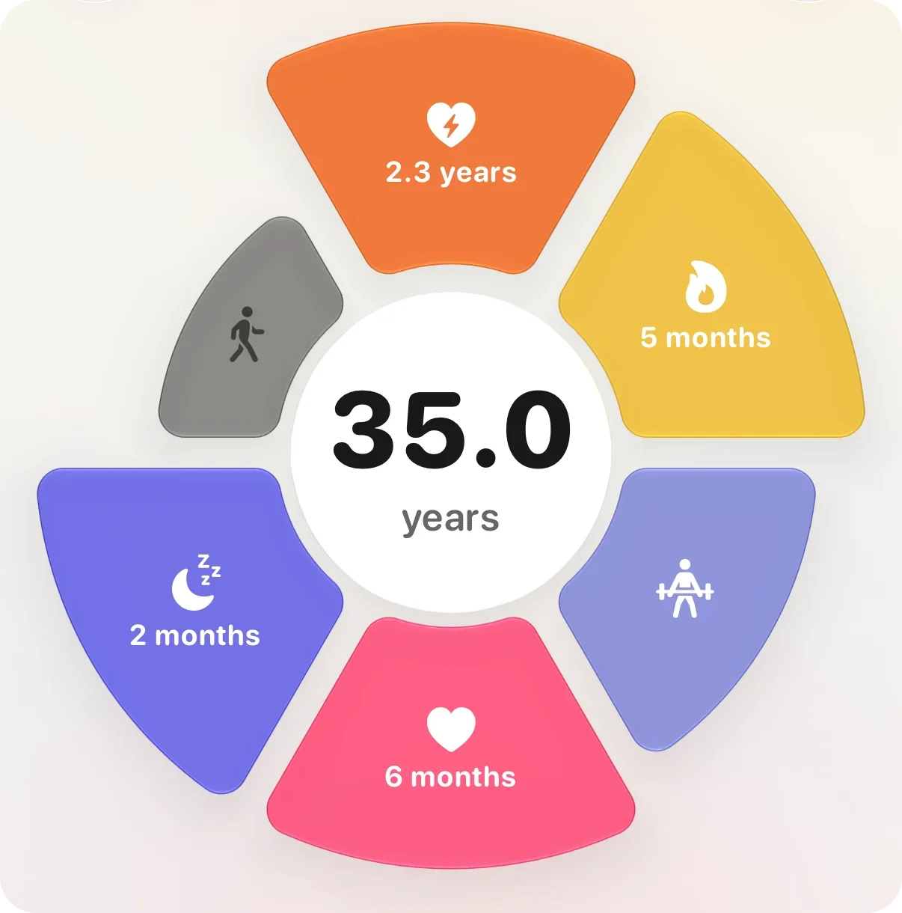

Comparison · Longevity

On iPhone today, you need an app for it. Apple's own Health Age comes with the redesigned Health app, but on 26 November 2026 it was only in the iOS 27.3 developer beta, and it needs an Apple Watch and an iPhone with Apple Intelligence. Apps that already estimate a biological age from what Apple Health stores include Bevel, Athlytic and Aera. The number means most when you wear an Apple Watch.
Soon. In September 2026 Apple presented a redesigned Health app with a longevity section. Its central number is called Health Age. Apple says it turns Apple Watch data, including VO2 max, resting heart rate, sleep and heart rate variability (HRV), into an age, and that lab results such as A1c and LDL cholesterol can be added.
On 3 November 2026 Apple wrote that the new Health app was in the iOS 27.3 developer beta and would come later in the year as a free update. Health Age needs an Apple Watch, and the app runs on iPhones with Apple Intelligence. Apple's language list names English, Chinese, French, Japanese, Korean, Norwegian, Portuguese, Spanish, Turkish and Vietnamese. On 26 November the public version was still iOS 27.2, without it.
Several apps read Apple Health and estimate an age from it. Three known ones next to Apple's own:
| Apple Health Age | Bevel | Athlytic | Aera | |
|---|---|---|---|---|
| Name in the app | Health Age | Biological Age | Athlytic Age | Body age |
| Available | Developer beta; free update later in 2026 | On the App Store | On the App Store | On the App Store |
| Reads, per its maker | VO2 max, resting heart rate, sleep, HRV; lab results optional | Sleep, activity, resting heart rate and more | Resting heart rate, VO2 max, sleep, body composition | Mainly cardio fitness, active minutes, resting heart rate, sleep length, sleep regularity, steps; blood pressure and waist optional |
| Shows each part's share | Not described in Apple's announcement | Not described | Not described; what-if sliders | Yes, in months or years per part |
| Account | Your Apple Account | Yes | None mentioned | None |
| Languages | 10 at launch, incl. English | English and 12 more | English | 10, incl. German and Hungarian |
| Price (US, 16 Nov 2026) | Free with the update | Free core; Pro $14.99/mo or $99.99/yr | Pro $4.99/mo or $29.99/yr; 1-week trial | Free core; Premium $8.99/mo or $39.99/yr, or pay once |
There are also apps that work out an age from a blood test, for example with the PhenoAge formula (Levine and colleagues, 2018), or from a questionnaire. They need a lab report or your answers instead of a watch, so they measure something different. For a longer look at Bevel, Athlytic and Aera beyond age, see Bevel, Athlytic or Aera.
A watch, ideally. The signals with the strongest research behind them, cardio fitness (VO2 max) and resting heart rate, are not measured by the iPhone alone. An Apple Watch estimates VO2 max during outdoor walks, runs and hikes. Other watches and trackers help as far as they write their values to Apple Health.
A few weeks of data. An honest age reads weeks, not a day. At the start the number is less certain, and a good app says so.
Without a watch, Apple Health mostly knows your steps, and an app can say little from that. Aera leaves out the parts it has no data for instead of guessing, pulls the number toward your calendar age, and shows how many parts count.
A biological age from the wrist is an estimate, not a lab test. It compares a few signals with people of your age and sex and writes the gap in years. Two apps can sit a few years apart and both be fair, because each uses its own signals and limits. Follow one number over months rather than comparing two apps on one day.
The watch sees no blood sugar, cholesterol, smoking or family history. A good number is not a clean bill of health and a bad one is not a diagnosis. More in What does a biological age from your watch mean?

Body age beside your calendar ageHow far your body age sits from your calendar age, how many parts count, and how sure Aera is.
Aera, for iPhone and Apple Watch
Aera works out your body age on your iPhone from what Apple Health already stores, and shows for each part how many months or years it adds or takes off. Every Monday it reads your last weeks again, so one quiet or busy week moves the number only a little. It never sits more than nine years from your calendar age. Behind every number is a short article with sources.
There is no account. Today's body age and its last 30 days are free; older months are part of Premium. Body age is an estimate for everyday wellbeing, not a medical age. Aera is not a medical device.
Not yet. Apple's Health Age comes with the redesigned Health app. On 26 November 2026 it was only in the iOS 27.3 developer beta, and Apple says it needs an Apple Watch and an iPhone with Apple Intelligence.
Among others Bevel (Biological Age), Athlytic (Athlytic Age) and Aera (body age). All three read Apple Health. Aera is the one that shows how many months or years each part adds or takes off, and it needs no account.
For a number that means much, yes, or another watch that writes to Apple Health. VO2 max and resting heart rate, the strongest signals, are not measured by the iPhone alone.
It is an estimate, not a lab test. Read it as a direction over weeks and months. Two apps can differ by a few years and both be fair.
Related guides: Apple Health Age or Aera · Bevel, Athlytic or Aera · What does a biological age from your watch mean?
 Or scan with your iPhone
Or scan with your iPhoneFree to start. No account. Works with the watch you already wear.